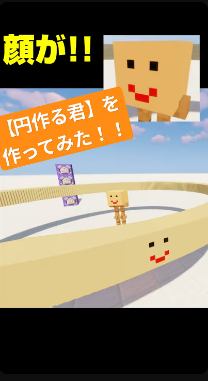

滑らかな円を作るツール「円作る君」を作ってみた！
こんにちは！こっぴーです🌱
今回は、**コマンドで滑らかな円を自動生成してくれるツール「円作る君」**を作ったので紹介します！
防具立てをぐるぐる回転させながら、位置データを使って円の形を読み取り、ブロックを配置するシステムです。
▶️ 動作イメージ動画はこちら
🔧 使っているコマンド
今回使用しているコマンドはこちらです：
・メインのコマンド
/execute store result score @e[type=armor_stand,name="en",limit=1] rot run data get entity @e[type=armor_stand,name="en",limit=1] Rotation[0] 1
/scoreboard players add @e[type=armor_stand,name="en",limit=1] rot 1
/execute store result entity @e[type=armor_stand,name="en",limit=1] Rotation[0] float 1 run scoreboard players get @e[type=armor_stand,name="en",limit=1] rot
/execute as @e[type=armor_stand,name="en"] at @s run summon armor_stand ^ ^ ^5 {CustomName:"\"sand\"",NoGravity:1b,Invisible:1b,Marker:1b,ArmorItems:[{},{},{},{id:"minecraft:player_head",Count:1b,tag:{SkullOwner:"nikorihito"}}]}
・真ん中の防具立て召喚のコマンド
/summon armor_stand ~ ~2 ~ {CustomName:"\"en\"",NoGravity:1b,Marker:1b,ArmorItems:[{},{},{},{id:"minecraft:player_head",Count:1b,tag:{SkullOwner:"nikorihito"}}]}
このコマンドでは、防具立て「en」を回転させ、Rotationデータをスコアボードに記録し、回転角度に応じて新しい防具立て（「sand」）を前方に召喚しています。
結果として、防具立てが一周するごとに円を構成する点が召喚され、**なめらかな円**を作り出せます✨
📝 こんな人におすすめ！
- マイクラで建築用の円ガイドを作りたい人
- 回転や座標のコマンドを学びたい人
- 防具立てを活用したギミックに興味がある人
ぜひ、動画を見て「円作る君」の動きをチェックしてみてください！
※注意書き このコマンドは、JE版 (Java版)でしか動かなく、メインのコマンドはリピートの常時実行、真ん中の防具立て召喚のコマンドはインパルスの動力が必要で、ボタンを付けてください。